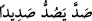
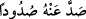
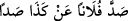

karşısında vay o zulmedenlerin hâline!
66. Onlar farkında değillerken kıyâmet gününün kendilerine ansızın gelmesinden
başka bir şey mi bekliyorlar?
67. O gün, Allah’a karşı gelmekten sakınanlar dışında, dost olanlar (bile)
birbirlerine düşman kesilirler.
“Meryem oğlu Îsâ, bir misâl olarak anlatılınca,” Peygamberimiz (s.a.) Allah’tan
başka tüm mâbudların, tapanlarıyla birlikte cehenneme odun oldukları âyetini okuyunca
(bk. Enbiyâ 21/98) Sehm kabîlesinden Abdullah b. Zibâra es-Sehmî, “Peki, Mesih Îsâ,
Üzeyir ve melekler de mâbuddurlar. Şâyet bunlar cehennemde olacaklarsa biz onlarla
beraber cehennemde olmaya râzıyız” dedi ve hemen “senin kavmin” buna sevinip
kahkahalar atarak “bağrışmaya başladılar.”
Abdullah b. Zibâra es-Sehmî onu darb-ı mesel yaptı. Bu adam Müslüman olmadan
önce Kureyş’in inatçı ve azgınlarındandı. Kamus’ta şöyle denmiştir: “Zibâra” zâ’nın
kesresi, bâ’nın ve râ’nın fethası iledir. Kureyşli şâir ve sahâbî olan Abdullah’ın
babasıdır. Bu adam, Peygamberimiz (s.a.)’in ümmetlerin Allah’tan başka taptıklarının
cehennem odunu olacaklarına dâir zikretmiş olduğu bu hükmü iptal etmek için Îsâ
(a.s.)’ı misâl ve ölçü kabul etmiştir.
Nitekim Peygamberimiz (s.a.) bahsi geçen Enbiyâ 21/98. âyetini okuyunca bunlar bu
duruma son derece öfkelendiler. Bildirilen hüküm çok ağırlarına gitti. İbn Zibâra itiraz
ve tartışma yoluyla, “bu hüküm bize ve bizim ilâhlarımıza mı mahsus, yoksa bütün
ümmetler için mi?” diye sordu. Peygamberimiz (s.a.) “bu hüküm size, ilahlarınıza ve
tüm ümmetlere âid genel bir hükümdür” buyurdu. Abdullah b. Zibara, “Kâbe’nin
Rabbine yemin olsun ki bu konuda seninle tartışıp mücâdele edeceğim. Hristiyanlar
Mesih Îsâ’ya, Yahudiler Üzeyr’e, Melihoğulları meleklere ibadet etmiyorlar mı? Şâyet
bu mabudlar Cehennemde olacaklarsa biz putlarımızla beraber onlarla Cehennemde
olmayı yeğleriz” dedi. Abdullah b. Zibâra’nın kavmi, onun bu çıkışına sevinip güldüler.
Seslerini yükselttiler. Bu misalden dolayı gürültü, feryat, sevinç ve şımarıklık çığlıkları
atarak yaygarayı bastılar. Çünkü onlar bu karambolde peygamberi sıkıştırıp
susturduklarını zannettiler. İşte Allah Teâlâ’nın “senin kavmin hemen bağrışmaya
başladılar” kavli bunu anlatmaktadır.
Kamus’ta, “
/sadde-yesuddu-sadîden” kelimesinin feryat etmek mânâsında
olduğu kaydedilmektedir.
Tâcü’l-masâdir’de şöyle denmiştir: “Sadd” değiştirmek, dönüştürmek, “sadd” ve
“sudûd” döndürmek, çevirmek, değiştirmek demektir. “Sudûd” yüz çevirmek demektir. “
/sadde anhu sudûden” ondan yüz çevirdi demektir. “
/sadde
fulânen an keza sadden” onu men’ etti, engelledi demektir. Nitekim Tac’da da böyle
geçmektedir.